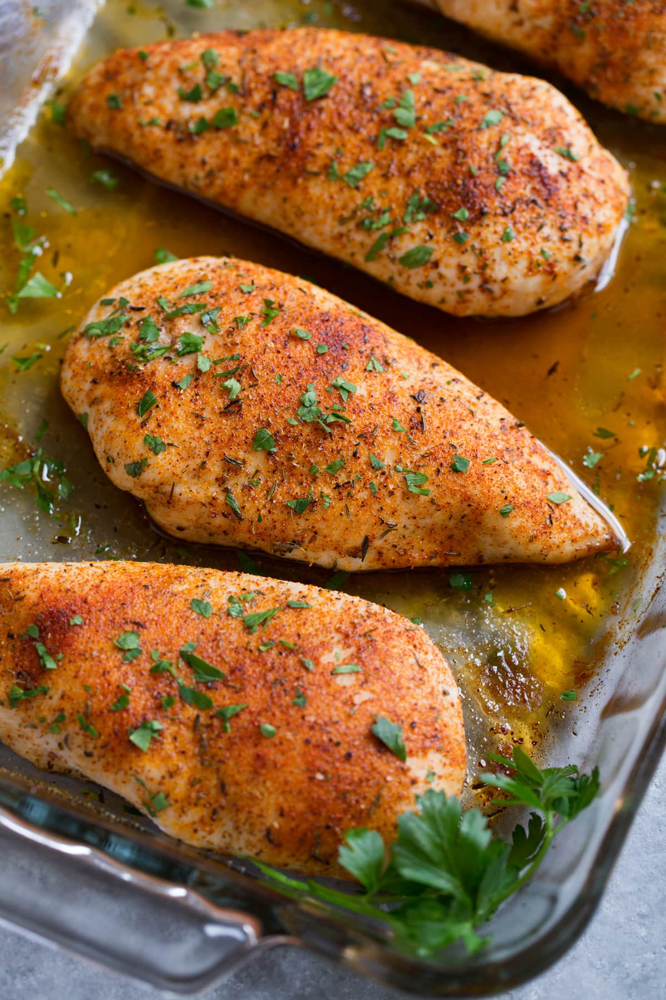

Baked Chicken Breast

Chicken breast is the best part of the chicken in my opinion, as it has the least fat and the most protein per unit weight. It is also very easy to prepare.
Ingredients
- Chicken breast, cut into desired size
- Seasoning of your choice
Instructions
- Clean and season chicken
- If possible, leave the chicken to marinate for a few hours
- Preheat oven to 350 degrees
- Place chicken on a suitable tray or pan, spaced evenly
- Bake for 20-25 mins
- Remove from oven, and let sit for 5 mins before serving